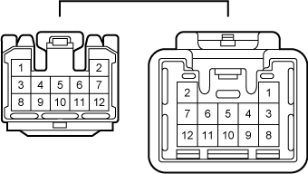

部品名
フロアワイヤ to インストルメントパネルワイヤ（～'07.6）
コネクターNo.
LD2
コネクター品番
90980-11531/90980-11530
コネクター色
乳白色
リペアW/H
090Ⅱ-12

艤装図
インストルメントパネル 艤装図（No.2）（～'05.12） / B-12
インストルメントパネル 艤装図（No.2）（'05.12～'10.8） / B-12
システム別配線図
ABS（FFのVSC付き車）
リヤフォグランプ
オーディオ＆バックガイドモニター（'05.12～のナビゲーションシステム付き車）
バックガイドモニター（～'05.12のナビゲーションシステム付き車）
バックドアオープナー
CAN通信（'04.11～'05.12のVSC付き車）
CAN通信（'05.12～）